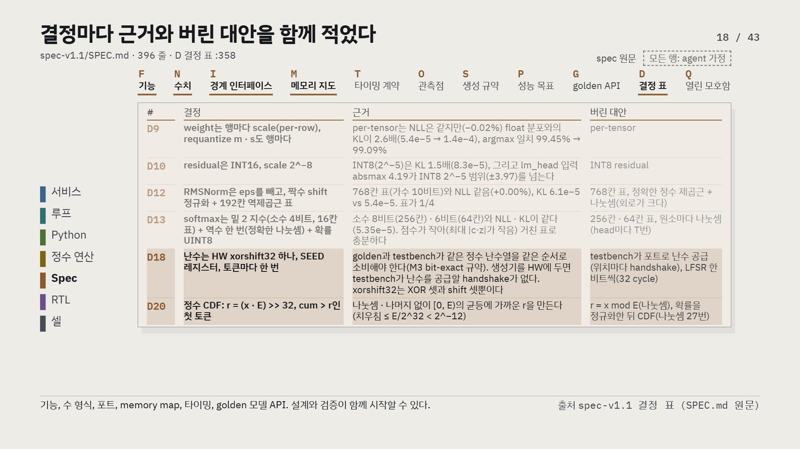
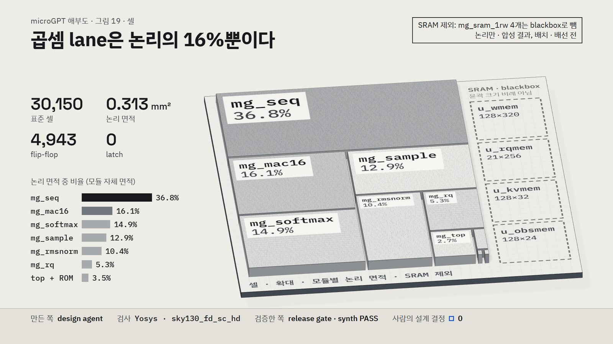
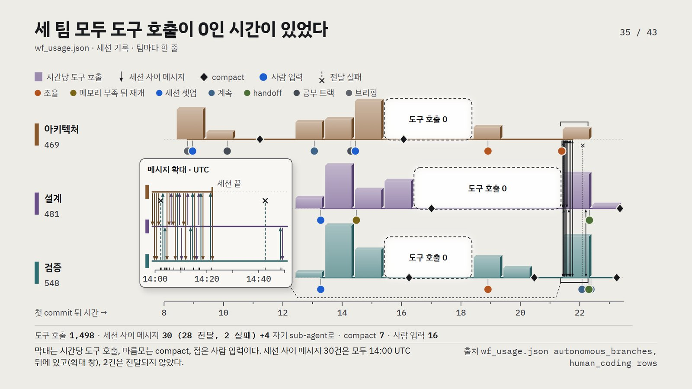

microGPT anatomy — 한국어 요약
AI agent 팀 셋이 Python GPT를 20시간 안에 bit-exact RTL로 옮겼고, 토큰 하나로 그 모든 층을 따라갈 수 있다
AI 채팅은 토큰을 하나씩 골라 답한다. 이 글은 그런 토큰 하나, 생성된 이름 karilen의 글자 l을 채팅 창에서 standard cell까지 거슬러 내려간다: 생성 loop, 약 200줄의 Python, 정수 모델, spec, SystemVerilog, 합성, 검증. 이 하드웨어는 AI agent 팀 셋(architecture · design · verification)과 사람 한 명이 만들었고, 첫 commit 뒤 19.55시간에 RTL과 정수 golden 모델(Python)이 bit-exact로 일치했다. 뒤 절반은 세션 기록으로 그것을 어떻게 만들었는지, 팀이 스스로 적은 기록과 무엇이 다른지 본다. 한계를 먼저 밝힌다. simulation과 synthesis까지이고 tape-out은 하지 않았다. 과정에 대한 것은 모두 한 번의 실행(n = 1)에서 본 관찰이지 효과가 아니다.

토큰 하나를 따라 내려가면 모든 층이 같은 데이터로 답한다. 층마다 실물이 있다: Python 파일, 양자화한 weight, 결정 표가 든 spec, SystemVerilog 2,395줄, 합성 보고, 두 simulator의 검증 보고. 같은 위치의 같은 토큰이 Python에서는 확률, 정수 모델에서는 정수 logit, RTL에서는 memory word의 16비트로 나타난다.
모델은 작지만 loop는 모든 서비스가 도는 그것이다. 토큰으로 바꾸고, forward pass를 돌리고, 다음 토큰마다 확률을 얻어 하나를 골라 덧붙이고 다시 돈다. 파라미터 4,192개, layer 1, 채널 16, head 4, 토큰 27(글자 26 + 시작 · 끝 표시)이고, 이름 32,033개 가운데 1,000 step(한 step에 이름 하나)만 학습했다. loop는 과거를 다시 계산하지 않는다. 위치마다 key와 value를 cache에 남기고, 뒤 위치는 그것을 읽기만 한다. 그래도 새 토큰마다 weight 전부와 자라는 KV cache를 읽어야 하니 생성은 대개 memory 문제다.
기준 모델은 순수 Python 약 200줄이다. Andrej Karpathy의 microgpt는 학습까지 포함한 GPT 전체이고, 위치 하나에 곱셈이 3,536 ~ 4,016번 든다. karilen의 위치 4에서 1등은 a(36%)이고, 실제로 뽑힌 l은 5위(4.1%)다. 그래서 1등만 고르는 하드웨어로는 이 이름이 나오지 않는다.
모든 수를 정수로 바꿔도 정확도는 거의 잃지 않았다. weight는 행마다 scale을 둔 INT8, residual은 INT16, softmax의 지수는 16칸 표, 역제곱근은 192칸 표가 됐고, 결정마다 근거와 버린 대안을 적었다. 예를 들어 tensor마다 scale 하나를 두면 loss는 같았지만 float 분포와의 차이(KL)가 2.6배였다. 다음 토큰은 xorshift32와 정수 누적합이 고르며 sampler에는 나눗셈이 없다. l의 구간 51,653 ~ 55,409에 난수 r = 52,122가 떨어진다. 학습에 쓰지 않은 이름 2,000개에서 loss는 0.0019% 움직였고(예산 3.0%), 1등 토큰은 float 모델과 99.54% 일치했다.
spec 하나 덕분에 design과 verification이 동시에 시작했다. 기능, 수 형식, 포트, memory map, 타이밍, golden 모델 API, 결정 표가 한 문서에 있다. architecture 팀은 spec 7판 · golden 5판, 모두 12판을 냈고, 질문 파일이 9건 오갔다. spec에 관한 질문 셋은 모두 새 판이 됐다.

design 팀은 SystemVerilog 2,395줄로 cycle 목표 안에 들었다. 파일 11개, lane 16개에서 위치당 평균 741.4 cycle로 목표 2,000 cycle보다 적다. 구성은 bus wrapper, top, sequencer, 그리고 sequencer가 부리는 곱셈 lane · RMS norm · softmax · sampler · requantizer · 표 둘 · memory다. l의 점수 41은 주소 0x0855 word의 위 16비트(0x0029)에 들어간다. 이 값은 golden packing으로 계산한 것이고 파형 캡처가 아니다.
합성하면 cell 약 3만 개이고, 곱셈 lane은 논리의 16%뿐이다. sky130으로 30,150 cell, 0.313 mm²(배선 전)이며, memory 넷은 blackbox로 빠졌다. sequencer 자체 논리가 36.8%, 곱셈 lane이 16.1%다.

verification은 답을 spec에서 만들었고, 잡은 것은 RTL보다 앞에 있었다. 기대값을 정할 때 RTL 내부를 보지 않았다(포트 표 · filelist는 봄). 세 번째 milestone에서 Verilator와 Icarus가 각각 52,467번 읽어 불일치 0, coverage bin 65/65였다. milestone 검증의 RTL 결함은 0건이고, 잡은 것은 spec 초안의 경계 사례와 design gate의 1'sd1 상수다. formal(깊이 40)은 M1 · M2 판뿐이고, mutation은 첫 RTL에서 76개 중 49개를 잡았다(살아남은 27개 중 17개는 formal 전용 줄).
위로 돌아오면 이름이 bit 단위로 같고, 실제 규모에서는 데이터 이동이 한계다. RTL simulation과 golden이 같은 이름 20개를 냈고, golden 이름 44개가 두 simulator에서 불일치 0이었다. 공개 정의로 계산하면 weight와 cache가 8비트일 때 decode는 모델 크기와 상관없이 byte당 약 2 연산이다. 측정이 아니라 계산이다.
두 번째 층: 모든 숫자는 세션 기록에서 script가 셌다. 세 팀 세션 5개의 기록을 extract_wf_usage.py가 한 줄씩 읽어 센다(snapshot 2026-11-01T23:11:03Z). 사람 입력 16건의 범주는 Claude가 나눴고 저자 검토 전이며, 원문은 싣지 않는다. 첫 commit부터 네 번째 milestone의 top-level 시험 통과까지 commit 65개, 22.17시간이었다.
timeline에는 긴 정적이 있고, 세션 사이 메시지는 모두 사람의 조율 지시 뒤에 오갔다. 도구 호출 1,498건 가운데 design은 09 ~ 13시 UTC, verification은 08 ~ 10시 UTC에 0이었다. 팀 세션 사이 메시지 30건은 모두 14:00 UTC 사람 지시 뒤에 있다.

사람 입력 16건 가운데 설계 결정은 하나도 없었다. 4건이 운영 개입이다: 조율 대리 3, 메모리 부족 뒤 재개 허락 1. 메모리 부족 뒤 재개 허락을 design은 11분, verification은 215분 기다렸다. 자율 규칙에 자원 실패 때의 기본 행동이 없었다. 원장은 사람 개입을 1건으로, 세션 기록은 4건으로 보인다. 원장은 11:31 UTC에 사람이 전한 메시지 2건과 메모리 부족 뒤 재개 허락 1건을 적지 않았다. custom agent 몫으로 적힌 작업 6건도 실행 기록에서는 모두 general-purpose였다.
sub-agent 25개 가운데 13개가 독립 검토였다. 좁게 정한 블록 6개를 맡긴 위임은 모두 사람 없이 gate를 통과했다(계약은 실행 중 메시지로 보충됐다). 출력 token은 약 144만, cache 읽기는 약 3억 3,900만이다. 가장 많이 돈 script는 팀마다 처음에 직접 만든 harness script였지만 과반은 아니다(shell 명령 814개 중 337개). 관찰 셋: 독립 검토는 spec에서 가장 많이 잡았고, spec 초안 검토에서 질문은 verification이 냈으며, 사람이 한 일은 설계 결정이 아니라 세션 조율과 메모리 부족 뒤 재개였다. 한 번의 실행, 같은 모델 계열의 검토자, 분석자도 Claude라는 한계가 있어 효과는 주장하지 않는다.
결과물은 공개했고, 숫자를 만드는 script는 작업 기록에 있다. 세 팀의 결과물(spec · 모델 · RTL · 검증)은 https://github.com/nick-public/microgpt-npu 에 있다. 이 글의 숫자는 아직 공개하지 않은 작업 기록에서 extract_facts.py가 facts.json을, extract_wf_usage.py가 wf_usage.json을 쓴다. 이 데이터 파일은 이번에 공개하지 않는다. 사람 입력 범주표에는 입력을 풀어 쓴 문장이, 집계 파일에는 로컬 경로가 들어 있기 때문이다. 시각 · 범주 · 집계만 남긴 판은 과정 데이터를 따로 정리할 때 낸다. 다음 실행은 사람이 설계 결정을 맡아 같은 일을 다시 해, 사람이 무엇을 더하는지 잰다. WF 자체는 따로 만든 설명 영상 https://youtu.be/l8oLoeUu3UU 에 있다.